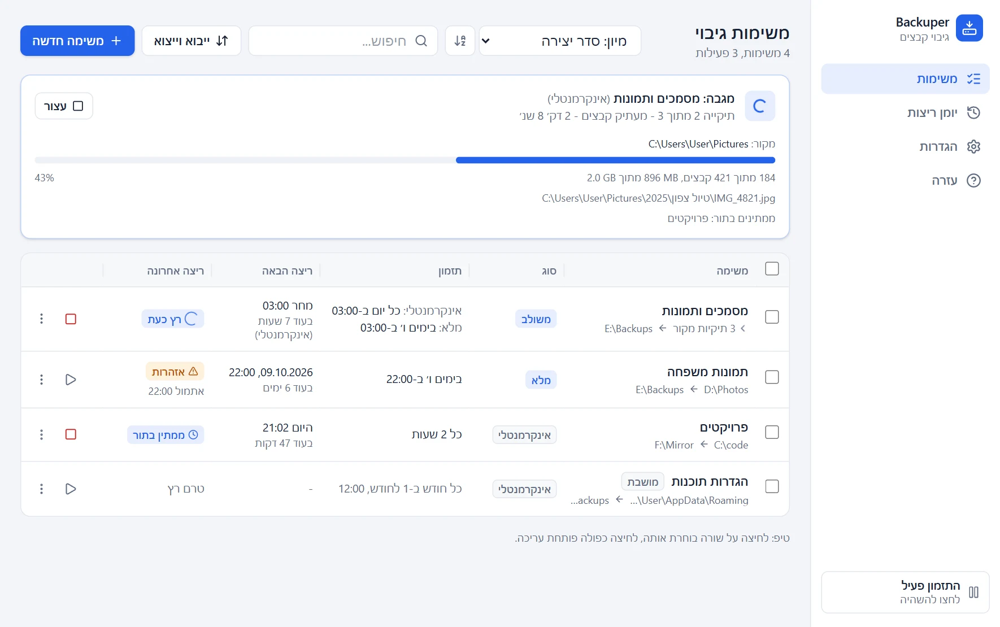

תזמון גמיש
יומי, שבועי, חודשי, כל כמה שעות או ידני. גיבוי שהוחמץ כי המחשב היה כבוי ירוץ כשהמחשב יידלק.
ל-Windows 10 ו-11 · חינם · בעברית
Backuper מעתיק את התיקיות החשובות לך לכונן אחר - פנימי, חיצוני או דיסק און קי - לפי לוח זמנים, בשקט ברקע. הגיבוי נשמר כקבצים ותיקיות רגילים, כך שתמיד אפשר לפתוח אותו, גם בלי התוכנה.
בהתקנה הראשונה Windows עשוי להציג אזהרה. זה צפוי ובטוח - כך ממשיכים.

מגדירים פעם אחת, ושוכחים. Backuper דואג לשאר.
יומי, שבועי, חודשי, כל כמה שעות או ידני. גיבוי שהוחמץ כי המחשב היה כבוי ירוץ כשהמחשב יידלק.
למשל גיבוי מלא פעם בשבוע, ובכל יום רק הקבצים שהשתנו. חוסך זמן ומקום בדיסק.
כל גיבוי הוא תיקייה עם תאריך. בלי דחיסה ובלי הצפנה - פותחים אותה בסייר הקבצים ומעתיקים בחזרה.
מחברים דיסק חיצוני והגיבוי מתחיל מעצמו, או שהתוכנה שואלת קודם אם לגבות עכשיו.
שומרים לפי מספר גיבויים, לפי ימים, או לתמיד. גיבויים ישנים נמחקים רק אחרי שהחדש הצליח.
מדלגים על קבצים זמניים, תיקיות מסוימות או קבצים גדולים, או מגבים רק סוגי קבצים שבחרתם.
קובץ פתוח בתוכנה אחרת, אין הרשאה, הדיסק מלא - לכל בעיה הסבר מה קרה ומה עושים.
מייבאים את רשימת המשימות של Cobian Backup או Reflector, עם תצוגה מקדימה לפני השמירה.
נפתח עם Windows לאזור ההודעות, ומודיע כשגיבוי הסתיים או כשמשהו דורש תשומת לב.
כל גיבוי נשמר בתיקייה משלו, עם שם התיקייה המקורית, התאריך והסוג. גיבוי מלא הוא עותק זהה של המקור, וגיבוי אינקרמנטלי מכיל רק את מה שהשתנה מאז הגיבוי הקודם.
כדי להחזיר קובץ, מוצאים אותו בתיקייה ומעתיקים בחזרה. לא צריך את התוכנה בשביל זה, ולא צריך לזכור סיסמה.
לחיצה על תמונה מגדילה אותה.
בפעם הראשונה שתפעילו את קובץ ההתקנה, סביר ש-Windows יציג מסך כחול שאומר שהוא "הגן על המחשב". זה לא אומר שמשהו לא בסדר. כך Windows מגיב לכל תוכנה חדשה של מפתח עצמאי. ככה ממשיכים:
גם זו אזהרה כללית על קבצים חדשים, מאותה סיבה.
Windows מכיר תוכנות לפי חתימה דיגיטלית - תעודה שמפתחים קונים בכמה מאות דולרים בשנה - ולפי מוניטין שנצבר מהרבה הורדות. Backuper הוא פרויקט אישי וחינמי, ואין לו תעודה כזו. לכן האזהרה אומרת רק "Windows עוד לא מכיר את התוכנה הזו", ולא "נמצא בה משהו מסוכן".
כל שורת קוד גלויה ב-GitHub. כל אחד יכול לבדוק בדיוק מה התוכנה עושה.
ההתקנה היא למשתמש שלכם בלבד. התוכנה לא יכולה לשנות את Windows או תוכנות אחרות.
אין חשבון, אין פרסומות ואין מעקב. הגיבוי נשאר בדיסק שלכם ולא נשלח לשום מקום.
קוראת רק מהתיקיות שבחרתם, וביעד מוחקת אך ורק תיקיות גיבוי שהיא עצמה יצרה.
לפני ההתקנה אפשר להעלות את הקובץ ל-VirusTotal, שבודק אותו בעשרות תוכנות אנטי-וירוס.
לכל גרסה ברשימה למטה מופיעה "טביעת אצבע" (SHA-256) של קובץ ההתקנה, להשוואה מול הקובץ שהורדתם.
מומלץ להוריד את הגרסה האחרונה. התקנת גרסה חדשה מעל גרסה קיימת שומרת את כל המשימות, ההגדרות והיומן.
טוען את רשימת הגרסאות...
מחשב עם Windows 10 או 11 (64 ביט), ודיסק נוסף לגיבוי - כונן פנימי, דיסק חיצוני או דיסק און קי. אין צורך בחיבור לאינטרנט.
כלום. Backuper חינמי לגמרי, בלי גרסת פרימיום ובלי פרסומות. הקוד פתוח ברישיון GPL-3.0.
פותחים את תיקיית הגיבוי בסייר הקבצים ומעתיקים בחזרה. כדי לשחזר הכול למצב האחרון, מתחילים מהגיבוי המלא ומעתיקים מעליו את הגיבויים האינקרמנטליים שאחריו, לפי הסדר. עמוד העזרה בתוכנה מסביר את זה בפירוט.
בגרסאות שאחרי 0.3.4 התוכנה בודקת לבד אם יש גרסה חדשה ומתעדכנת (אפשר לשנות את זה בהגדרות). בגרסה 0.3.4 או ישנה יותר, מורידים פעם אחת את הגרסה החדשה מהרשימה למעלה ומתקינים אותה מעל הקיימת. בכל מקרה המשימות, ההגדרות והיומן נשמרים.
בהגדרות Windows, תחת "אפליקציות", בוחרים ב-Backuper ולוחצים "הסר התקנה". הגיבויים עצמם נשארים בדיסק ולא נמחקים.
לא. Backuper מגבה מדיסק לדיסק באותו מחשב. אם חשוב לכם עותק גם מחוץ לבית, אפשר לגבות לדיסק חיצוני ולשמור אותו במקום אחר.
אשמח לשמוע. אפשר לפתוח דיווח בדף הבעיות ב-GitHub.